Nodo (1,0) $$ \begin{align*} T_{i-1, j} - 4 T_{i, j} + T_{i+1, j} + T_{i, j-1} + T_{i, j+1} &= 0 \\ T_{1-1, 0} - 4 T_{1, 0} + T_{1+1, 0} + T_{1, 0-1} + T_{1, 0+1} &= 0 \\ T_{0, 0} - 4 T_{1, 0} + T_{2, 0} + T_{1, -1} + T_{1, 1} &= 0 \end{align*} $$
aproximando \( T_{y} \) con una diferencia finita centrada $$ \begin{equation*} \frac{\partial T}{\partial y} = \frac{T_{i, j-1} - T_{i, j+1}}{2 \Delta y} = \frac{T_{1, 0-1} - T_{1, 0+1}}{2 \Delta y} = \frac{T_{1, -1} - T_{1, 1}}{2 \Delta y} \end{equation*} $$
despejando \( T_{1, -1} \) $$ \begin{equation*} T_{1, -1} = 2 \Delta y \frac{\partial T}{\partial y} + T_{1, 1} \end{equation*} $$
reemplazando $$ \begin{align*} T_{0, 0} - 4 T_{1, 0} + T_{2, 0} + 2 \Delta y \frac{\partial T}{\partial y} + T_{1, 1} + T_{1, 1} &= 0 \\ T_{0, 0} - 4 T_{1, 0} + T_{2, 0} + 2 \Delta y \frac{\partial T}{\partial y} + 2 T_{1, 1} &= 0 \end{align*} $$
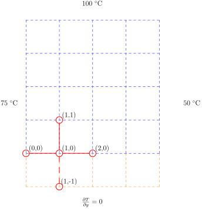
Nodo (2,0) $$ \begin{align*} T_{i-1, j} - 4 T_{i, j} + T_{i+1, j} + T_{i, j-1} + T_{i, j+1} &= 0 \\ T_{2-1, 0} - 4 T_{2, 0} + T_{2+1, 0} + T_{2, 0-1} + T_{2, 0+1} &= 0 \\ T_{1, 0} - 4 T_{2, 0} + T_{3, 0} + T_{2, -1} + T_{2, 1} &= 0 \end{align*} $$
aproximando \( T_{y} \) con una diferencia finita centrada $$ \begin{equation*} \frac{\partial T}{\partial y} = \frac{T_{i, j-1} - T_{i, j+1}}{2 \Delta y} = \frac{T_{2, 0-1} - T_{2, 0+1}}{2 \Delta y} = \frac{T_{2, -1} - T_{2, 1}}{2 \Delta y} \end{equation*} $$
despejando \( T_{2, -1} \) $$ \begin{equation*} T_{2, -1} = 2 \Delta y \frac{\partial T}{\partial y} + T_{2, 1} \end{equation*} $$
reemplazando $$ \begin{align*} T_{1, 0} - 4 T_{2, 0} + T_{3, 0} + 2 \Delta y \frac{\partial T}{\partial y} + T_{2, 1} + T_{2, 1} &= 0 \\ T_{1, 0} - 4 T_{2, 0} + T_{3, 0} + 2 \Delta y \frac{\partial T}{\partial y} + 2 T_{2, 1} &= 0 \end{align*} $$
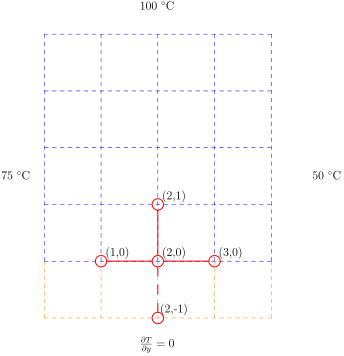
Nodo (3,0) $$ \begin{align*} T_{i-1, j} - 4 T_{i, j} + T_{i+1, j} + T_{i, j-1} + T_{i, j+1} &= 0 \\ T_{3-1, 0} - 4 T_{3, 0} + T_{3+1, 0} + T_{3, 0-1} + T_{3, 0+1} &= 0 \\ T_{2, 0} - 4 T_{3, 0} + T_{4, 0} + T_{3, -1} + T_{3, 1} &= 0 \end{align*} $$
aproximando \( T_{y} \) con una diferencia finita centrada $$ \begin{equation*} \frac{\partial T}{\partial y} = \frac{T_{i, j-1} - T_{i, j+1}}{2 \Delta y} = \frac{T_{3, 0-1} - T_{3, 0+1}}{2 \Delta y} = \frac{T_{3, -1} - T_{3, 1}}{2 \Delta y} \end{equation*} $$
despejando \( T_{3, -1} \) $$ \begin{equation*} T_{3, -1} = 2 \Delta y \frac{\partial T}{\partial y} + T_{3, 1} \end{equation*} $$
reemplazando $$ \begin{align*} T_{2, 0} - 4 T_{3, 0} + T_{4, 0} + 2 \Delta y \frac{\partial T}{\partial y} + T_{3, 1} + T_{3, 1} &= 0 \\ T_{2, 0} - 4 T_{3, 0} + T_{4, 0} + 2 \Delta y \frac{\partial T}{\partial y} + 2 T_{3, 1} &= 0 \end{align*} $$
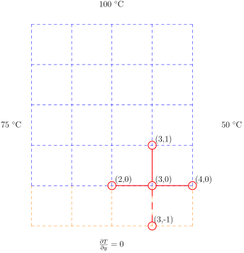
Nodo (1,1) $$ \begin{align*} T_{i-1, j} - 4 T_{i, j} + T_{i+1, j} + T_{i, j-1} + T_{i, j+1} &= 0 \\ T_{1-1, 1} - 4 T_{1, 1} + T_{1+1, 1} + T_{1, 1-1} + T_{1, 1+1} &= 0 \\ T_{0, 1} - 4 T_{1, 1} + T_{2, 1} + T_{1, 0} + T_{1, 2} &= 0 \end{align*} $$
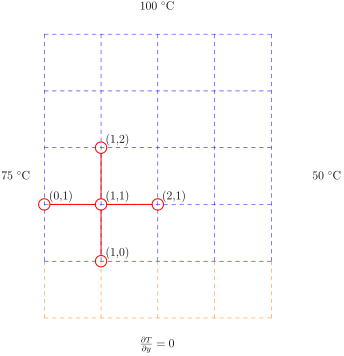
Nodo (2,1) $$ \begin{align*} T_{i-1, j} - 4 T_{i, j} + T_{i+1, j} + T_{i, j-1} + T_{i, j+1} &= 0 \\ T_{2-1, 1} - 4 T_{2, 1} + T_{2+1, 1} + T_{2, 1-1} + T_{2, 1+1} &= 0 \\ T_{1, 1} - 4 T_{2, 1} + T_{3, 1} + T_{2, 0} + T_{2, 2} &= 0 \end{align*} $$
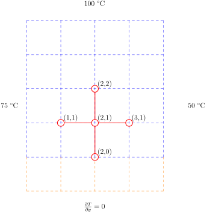
Nodo (3,1) $$ \begin{align*} T_{i-1, j} - 4 T_{i, j} + T_{i+1, j} + T_{i, j-1} + T_{i, j+1} &= 0 \\ T_{3-1, 1} - 4 T_{3, 1} + T_{3+1, 1} + T_{3, 1-1} + T_{3, 1+1} &= 0 \\ T_{2, 1} - 4 T_{3, 1} + T_{4, 1} + T_{3, 0} + T_{3, 2} &= 0 \end{align*} $$
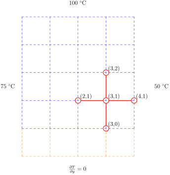
Nodo (1,2) $$ \begin{align*} T_{i-1, j} - 4 T_{i, j} + T_{i+1, j} + T_{i, j-1} + T_{i, j+1} &= 0 \\ T_{1-1, 2} - 4 T_{1, 2} + T_{1+1, 2} + T_{1, 2-1} + T_{1, 2+1} &= 0 \\ T_{0, 2} - 4 T_{1, 2} + T_{2, 2} + T_{1, 1} + T_{1, 3} &= 0 \end{align*} $$
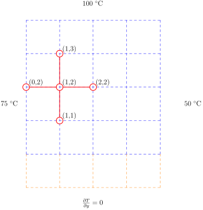
Nodo (2,2) $$ \begin{align*} T_{i-1, j} - 4 T_{i, j} + T_{i+1, j} + T_{i, j-1} + T_{i, j+1} &= 0 \\ T_{2-1, 2} - 4 T_{2, 2} + T_{2+1, 2} + T_{2, 2-1} + T_{2, 2+1} &= 0 \\ T_{1, 2} - 4 T_{2, 2} + T_{3, 2} + T_{2, 1} + T_{2, 3} &= 0 \end{align*} $$
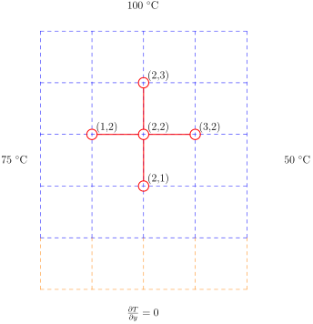
Nodo (3,2) $$ \begin{align*} T_{i-1, j} - 4 T_{i, j} + T_{i+1, j} + T_{i, j-1} + T_{i, j+1} &= 0 \\ T_{3-1, 2} - 4 T_{3, 2} + T_{3+1, 2} + T_{3, 2-1} + T_{3, 2+1} &= 0 \\ T_{2, 2} - 4 T_{3, 2} + T_{4, 2} + T_{3, 1} + T_{3, 3} &= 0 \end{align*} $$
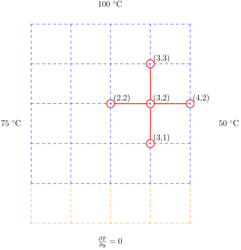
Nodo (1,3) $$ \begin{align*} T_{i-1, j} - 4 T_{i, j} + T_{i+1, j} + T_{i, j-1} + T_{i, j+1} &= 0 \\ T_{1-1, 3} - 4 T_{1, 3} + T_{1+1, 3} + T_{1, 3-1} + T_{1, 3+1} &= 0 \\ T_{0, 3} - 4 T_{1, 3} + T_{2, 3} + T_{1, 2} + T_{1, 4} &= 0 \end{align*} $$
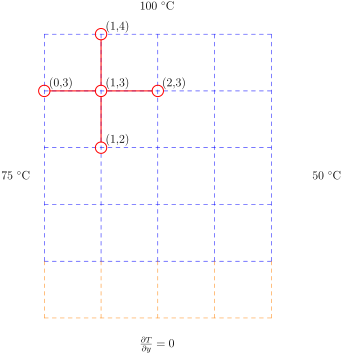
Nodo (2,3) $$ \begin{align*} T_{i-1, j} - 4 T_{i, j} + T_{i+1, j} + T_{i, j-1} + T_{i, j+1} &= 0 \\ T_{2-1, 3} - 4 T_{2, 3} + T_{2+1, 3} + T_{2, 3-1} + T_{2, 3+1} &= 0 \\ T_{1, 3} - 4 T_{2, 3} + T_{3, 3} + T_{2, 2} + T_{2, 4} &= 0 \end{align*} $$
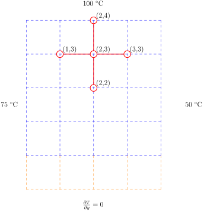
Nodo (3,3) $$ \begin{align*} T_{i-1, j} - 4 T_{i, j} + T_{i+1, j} + T_{i, j-1} + T_{i, j+1} &= 0 \\ T_{3-1, 3} - 4 T_{3, 3} + T_{3+1, 3} + T_{3, 3-1} + T_{3, 3+1} &= 0 \\ T_{2, 3} - 4 T_{3, 3} + T_{4, 3} + T_{3, 2} + T_{3, 4} &= 0 \end{align*} $$
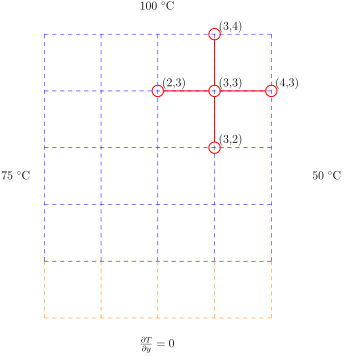
Sistema de ecuaciones del problema $$ \begin{align*} - 4 T_{1, 0} + 2 T_{1, 1} + T_{2, 0} &= -75 \\ T_{1, 0} - 4 T_{2, 0} + 2 T_{2, 1} + T_{3, 0} &= 0 \\ T_{2, 0} - 4 T_{3, 0} + 2 T_{3, 1} &= -50 \\ T_{1, 0} - 4 T_{1, 1} + T_{1, 2} + T_{2, 1} &= -75 \\ T_{1, 1} + T_{2, 0} - 4 T_{2, 1} + T_{2, 2} + T_{3, 1} &= 0 \\ T_{2, 1} + + T_{3, 0} - 4 T_{3, 1} + T_{3, 2} &= -50 \\ T_{1, 1} - 4 T_{1, 2} + T_{1, 3} + T_{2, 2} &= -75 \\ T_{1, 2} + T_{2, 1} - 4 T_{2, 2} + T_{2, 3} + T_{3, 2} &= 0 \\ T_{2, 2} + T_{3, 1} - 4 T_{3, 2} + T_{3, 3} &= -50 \\ T_{1, 2} - 4 T_{1, 3} + T_{2, 3} &= -175 \\ T_{1, 3} + T_{2, 2} - 4 T_{2, 3} + T_{3, 3} &= -100 \\ T_{2, 3} + T_{3, 2} - 4 T_{3, 3} &= -150 \end{align*} $$
en forma matricial $$ \begin{equation*} \begin{bmatrix} -4 & 2 & 0 & 0 & 1 & 0 & 0 & 0 & 0 & 0 & 0 & 0 \\ 1 & 0 & 0 & 0 & -4 & 2 & 0 & 0 & 1 & 0 & 0 & 0 \\ 0 & 0 & 0 & 0 & 1 & 0 & 0 & 0 & -4 & 2 & 0 & 0 \\ 1 & -4 & 1 & 0 & 0 & 1 & 0 & 0 & 0 & 0 & 0 & 0 \\ 0 & 1 & 0 & 0 & 1 & -4 & 1 & 0 & 0 & 1 & 0 & 0 \\ 0 & 0 & 0 & 0 & 0 & 1 & 0 & 0 & 1 & -4 & 1 & 0 \\ 0 & 1 & -4 & 1 & 0 & 0 & 1 & 0 & 0 & 0 & 0 & 0 \\ 0 & 0 & 1 & 0 & 0 & 1 & -4 & 1 & 0 & 0 & 1 & 0 \\ 0 & 0 & 0 & 0 & 0 & 0 & 1 & 0 & 0 & 1 & -4 & 1 \\ 0 & 0 & 1 & -4 & 0 & 0 & 0 & 1 & 0 & 0 & 0 & 0 \\ 0 & 0 & 0 & 1 & 0 & 0 & 1 & -4 & 0 & 0 & 0 & 1 \\ 0 & 0 & 0 & 0 & 0 & 0 & 0 & 1 & 0 & 0 & 1 & -4 \end{bmatrix} \begin{bmatrix} T_{1,0} \\ T_{1,1} \\ T_{1,2} \\ T_{1,3} \\ T_{2,0} \\ T_{2,1} \\ T_{2,2} \\ T_{2,3} \\ T_{3,0} \\ T_{3,1} \\ T_{3,2} \\ T_{3,3} \end{bmatrix} = \begin{bmatrix} -75 \\ 0 \\ -50 \\ -75 \\ 0 \\ -50 \\ -75 \\ 0 \\ -50 \\ -175 \\ -100 \\ -150 \end{bmatrix} \end{equation*} $$
C = [[-4 2 0 0 1 0 0 0 0 0 0 0],
[1 0 0 0 -4 2 0 0 1 0 0 0],
[0 0 0 0 1 0 0 0 -4 2 0 0],
[1 -4 1 0 0 1 0 0 0 0 0 0],
[0 1 0 0 1 -4 1 0 0 1 0 0],
[0 0 0 0 0 1 0 0 1 -4 1 0],
[0 1 -4 1 0 0 1 0 0 0 0 0],
[0 0 1 0 0 1 -4 1 0 0 1 0],
[0 0 0 0 0 0 1 0 0 1 -4 1],
[0 0 1 -4 0 0 0 1 0 0 0 0],
[0 0 0 1 0 0 1 -4 0 0 0 1],
[0 0 0 0 0 0 0 1 0 0 1 -4]];
D = [[-75],
[0],
[-50],
[-75],
[0],
[-50],
[-75],
[0],
[-50],
[-175],
[-100],
[-150]];
u = inv(C)*D;
u = transpose(reshape(u, 4,3))
for i=1:3
for j=1:4
println("T[$i,$(j-1)] = $(u[i,j])")
end
end
T[1,0] = 71.9073553216478
T[1,1] = 72.8074388953829
T[1,2] = 76.01510157957134
T[1,3] = 83.41092594700703
T[2,0] = 67.01454349582546
T[2,1] = 68.3072986803124
T[2,2] = 72.84204147589548
T[2,3] = 82.62860220845677
T[3,0] = 59.53622130102927
T[3,1] = 60.565170854145784
T[3,2] = 64.41716343524146
T[3,3] = 74.26144141092456